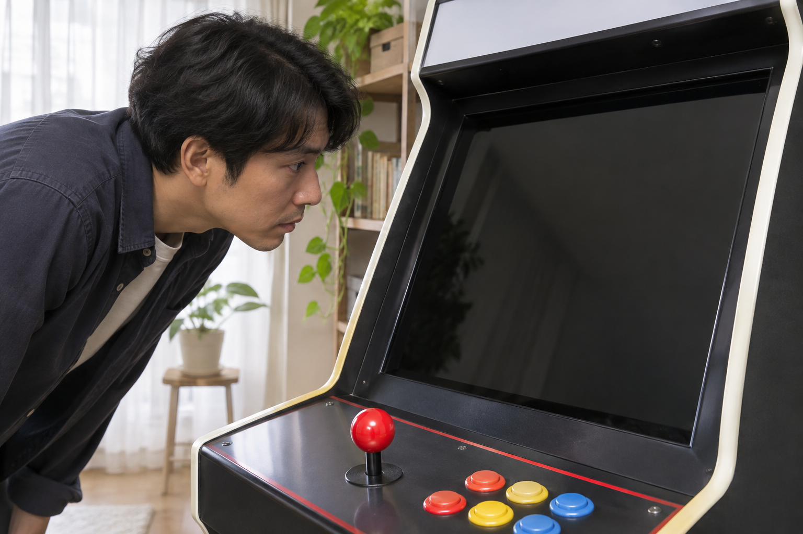
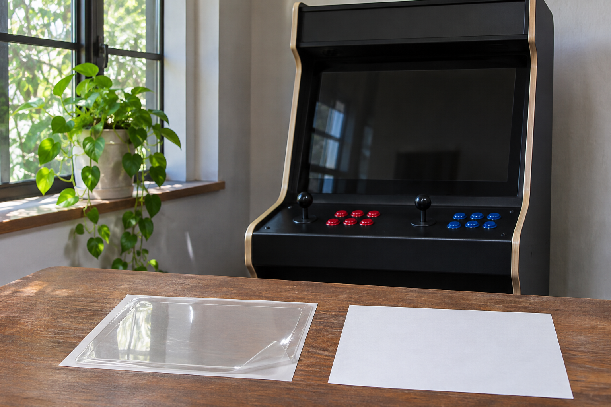

일반적인 가정용 오락기에 화면 보호필름을 꼭 붙일 필요는 없습니다. 화면을 만질 일이 거의 없다면 제품 안내에 맞춰 표면을 관리하는 것부터 시작하세요. 손이나 물건이 자주 닿는 위치라면 화면 앞판의 재질과 부착 가능 여부를 확인한 뒤 필름을 검토하세요.

화면 앞판과 제품 안내 확인
오락기 화면을 관리할 때는 눈앞에 보이는 표면이 별도 앞판인지, 제품 안내에서 어떤 재질로 설명하는지 먼저 확인하세요. 노리박스 제품 목록에는 신형HX 32+ 강화유리 스탠드형과 신형HX 32+ 강화유리 좌식형이 각각 안내되어 있습니다. 상품명에 적힌 강화유리 표기만으로 보호필름의 호환성까지 알 수는 없으니 정확한 모델명으로 안내를 확인하세요.
보호필름을 검토할 상황
오락기 화면에 손자국이 반복된다면 필름을 주문하기 전에 언제, 무엇이 화면에 닿는지 살펴보세요. 청소할 때만 화면을 만진다면 오락기 화면과 조작부 청소 방법을 참고해 관리 방법부터 점검하세요. 화면 앞에 물건을 놓다가 닿는 경우에는 물건을 둘 위치를 바꿔 보세요.

구매 전 확인할 항목
오락기 화면 보호필름은 보이는 화면 크기와 실제 부착할 앞판 크기를 구분해 확인한 뒤 고르세요. 화면의 대각선 숫자만 보고 주문하면 테두리나 모서리 형태를 놓칠 수 있습니다. 다음 항목을 판매자 또는 제품 안내에서 확인한 뒤 부착 여부를 결정하세요.
- 정확한 모델명과 필름을 붙일 표면의 재질
- 테두리를 제외하고 필름이 닿는 면의 가로·세로와 모서리 모양
- 권장 부착 방식과 제거할 때 주의할 점
- 터치 기능이 있는 모델이라면 필름 사용이 안내되어 있는지 여부
노리박스 오락기의 화면과 본체 형태는 제품자세히보기에서 확인할 수 있습니다.